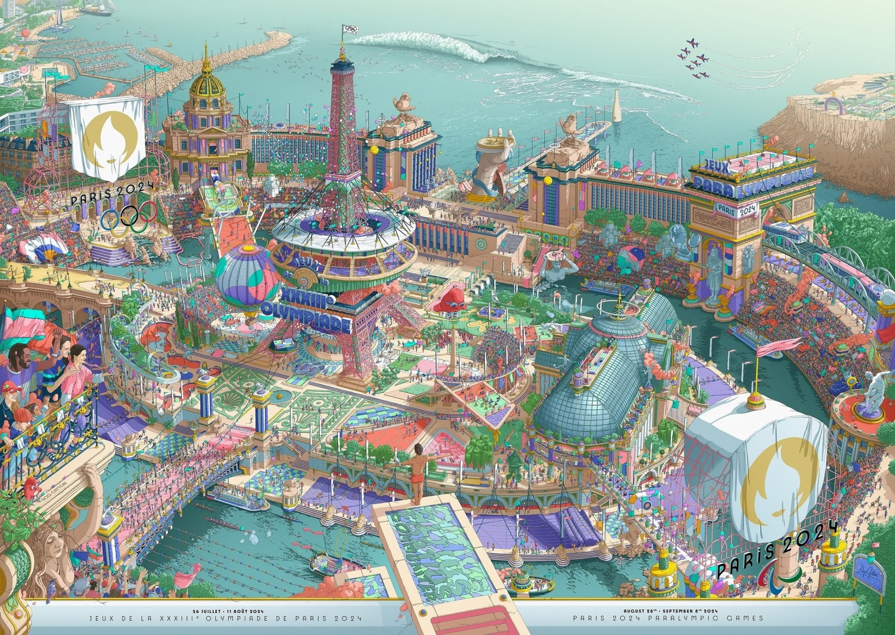

Les porteurs de la flamme
Le Relais de la Flamme est une tradition incontournable qui nous plonge dans les racines des Jeux. La première torche du Relais de la Flamme Olympique de Paris 2024 sera allumée le 16 avril 2024 dans le sanctuaire d’Olympie, en Grèce, où se déroulaient les Jeux antiques. A partir de mai 2024, 11 000 porteurs de la Flamme se relaieront pour célébrer l’arrivée des Jeux en France.
Ouverture de la billetterie
Les billets sont disponibles le 9 octobre 2023 à Le principe du premier arrivé, premier servi. elle est Accessible à tous, sans tirage au sort, uniquement sur le site Internet billetsofficiels.paris2024.org. Vous pouvez acheter jusqu'à 30 tickets par compte ticket, quel que soit votre statut Achats pour les Jeux olympiques.
Les affiches officielles
L'affiche officielle des JO de Paris 2024 est sortie Dévoilé le 4 mars 2024 au musée d'Orsay. Applicable à Expliquez la version des Jeux olympiques qu'ils représentent, Les affiches sont une tradition : depuis les Jeux olympiques de Stockholm En 1912, chaque comité organisateur décerne son symbole. L'affiche officielle des JO de Paris 2024 est sortie Créé en collaboration avec le designer français Ugo Gatoni.
